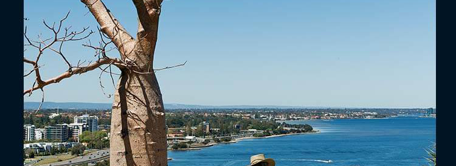

<!DOCTYPE html>  
  
<html lang="en">  
<head>  
<meta charset="utf-8" />  
<meta name="viewport" content="width=device-width, initial-scale=1.0" />  
<title>button</title>  

<script>  
!function() {
	var CW_REM = 7.5
	var CH = window.innerHeight || document.documentElement.clientHeight || document.body.clientHeight;
	var CW = Math.min(window.innerWidth || document.documentElement.clientWidth || document.body.clientWidth, CH * 1.4);
	var CH_REM = CH / CW * CW_REM
	document.documentElement.style.fontSize = (CW / CW_REM) + 'px';	
}()

</script>  


<style>
html, body {
	width: 100%;height:100%; padding: 0;margin:0;
}

.btn {
	padding: .3em .8em;
	border: 1px solid rgba(0,0,0,.1);
	background: #58a linear-gradient(hsla(0,0%,100%,.2), transparent);
	border-radius: .2em;
	box-shadow: 0 .05em .25em rgba(0,0,0,.5);
	color: white;
	text-shadow: 0 -.05em .05em rgba(0,0,0,.5);
	font-size: 125%;
	line-height: 1.5;
}
.btn-sure {
	background-color: red;
}
.btn-cancel {
	background-color: green;
}

.content {
	width:50vw; /* 视口宽度 0 -- 100*/
	/*height:10vh;*/

	width: 100vmin; /*vmin : 选取 vw 和 vh 中最小的那个 */
	/*height:100vmax;*/

	background: red;
}

.bg {
	width:7.5rem;
	height:8.22rem;

	position: fixed;
	z-index:1;
	top:0;
	left:0;

	/* 拼接img 要加上 */
	line-height: 0; 


	/* 拼接会有白边间隙
	background: url(./image/bs_3_01.jpg) center 0,
				url(./image/bs_3_02.jpg) center 2.74rem,
				url(./image/bs_3_03.jpg) center 5.48rem;
	*/

	background-size: 7.5rem 2.74rem;
	background-repeat: no-repeat;
}
.bg img {
	width:100%;
}

.bd {
	/*border: 10px solid hsla(0,0%,100%,.5);*/
	border:  10px solid rgba(255,255,255,0.5);
	background: white;
	background-clip: padding-box; /*背景会延伸到边框所在的区域下层, 加上此属性将其裁剪掉*/


	background: tan;
	border-radius: .8em;
	padding: 1em;
	box-shadow: 0 0 0 .6em #655;
	outline: .6em solid #655;

	position: fixed;
	z-index:2;
	width:3rem;
	height: 3rem;
	margin:auto;
	left:0;
	right:0;
	top:0;
	bottom: 0;
}


/**/
@keyframes ani-ants { to { background-position: 100% } }
.marching-ants {
	margin: 1rem;
	width:3rem;
	height:3rem;

	border: 1px solid transparent; /*透明边框*/
	/*
	background: linear-gradient(white, white) padding-box,
				repeating-linear-gradient(-45deg, black 0, black 25%, white 0, white 50%) 0 / .6em .6em;
	*/
	/*background:red;*/
	/*background: repeating-linear-gradient(-45deg, black 0, black 25%, white 0, white 50%) 0 / .6em .6em;*/
	

	/*animation: ani-ants 12s linear infinite;*/
}
/**/
</style>


</head>  
<body>
	<!-- 
	<button class="btn">home</button>
	<button class="btn btn-sure">sure</button>
	<button class="btn btn-cancel">cancel</button>

	<div class="content"></div>


	<div class="bg">
		
		
		
	</div>

	<div class="bd"></div>
	 -->

	<!--  -->
	<div class="marching-ants"></div>
</body>  
</html> 
